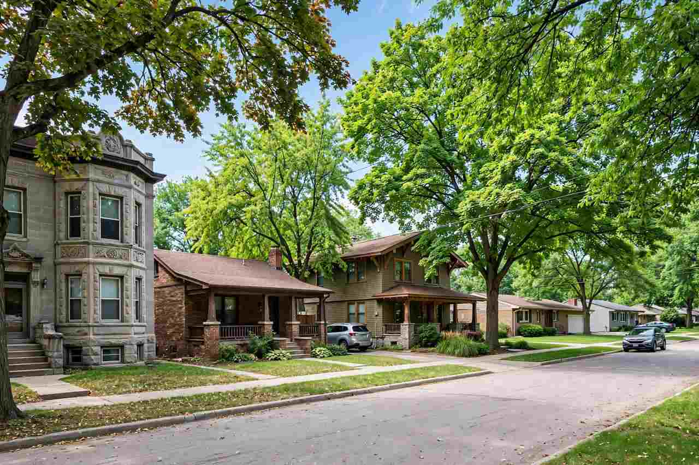

Rodent Control · Vernon Hills, IL
Trusted Rodent Control in Vernon Hills, IL
Murvo delivers same-day rodent control in Vernon Hills for rats and mice in attics, walls, kitchens, and crawl spaces. Local crews start with a thorough inspection, then remove, exclude, and monitor until the problem is solved. You approve one flat-rate price in writing before any work starts, and every job carries a written guarantee across Lake County. Local crews cover 1 ZIP codes in the Vernon Hills area, from Mettawa to the far side of Lake County.
24/7Availability
1ZIP codes covered
Same-dayResponse
Licensed · Upfront options · Written guarantees · Fully insured
Vernon Hills at a glance
Local Rodent Control for Vernon Hills, IL.
Lake County
Countynortheast Illinois
RegionRound Lake Beach · 12 mi
Nearest metro190 miles northeast of Springfield
From Springfield1
ZIP codes covered Service by service in Vernon Hills
Rodent Control Services Available in Vernon Hills
The full range of residential and commercial rodent services in Vernon Hills and Lake County - built around the species and housing here, from emergency removal and same-day control to exclusion, proofing, trapping, cleanup, and damage repair. Every service below is quoted flat-rate in writing and backed by our workmanship guarantee.
- 01Rodent Control↗
- 02Rodent Inspection↗
- 03Rodent Removal↗
- 04Rodent Exclusion↗
- 05Rodent Proofing↗
- 06Rat Control↗
- 07Mice Control↗
- 08Mouse Removal↗
- 09Rat Removal↗
- 10Rodent Trapping↗
- 11Rodent Baiting↗
- 12Rodenticide Application↗
- 13Attic Rodent Removal↗
- 14Crawl Space Rodent Removal↗
- 15Wall Rodent Removal↗
- 16Kitchen Rodent Control↗
- 17Garage Rodent Control↗
- 18Commercial Rodent Control↗
- 19Residential Rodent Control↗
- 20Emergency Rodent Removal↗
- 21Same-Day Rodent Control↗
- 22Rodent Damage Repair↗
- 23Rodent Waste Cleanup↗
- 24Rodent Disinfection↗
- 25Rodent Odor Removal↗
- 26Dead Rodent Removal↗
- 27Rodent Dropping Cleanup↗
- 28Rodent Exclusion for Roofs↗
- 29Rodent Exclusion for Vents↗
- 30Rodent Exclusion for Chimneys↗
Rodent Control in Vernon Hills
Rodent Control in Vernon Hills
Droppings along baseboards, scratching after dark, or chewed packaging in Vernon Hills usually mean Norway rat (Rattus norvegicus) or House mouse (Mus musculus) have moved in, not just passing through. Murvo's rodent control starts with a full inspection, removes the animals already inside, and seals the gaps they used. You get one flat-rate written quote before work begins, backed by our written workmanship guarantee.
In Vernon Hills, rodent control is not a generic spray-and-go service. Rodents exploit basement foundations, alley-facing garage doors, sewer laterals, and gaps around utility lines and sills in vintage two-flats and greystones, brick bungalows, older single-family homes, and farm and rural properties, and a fix that ignores those routes does not last. Murvo's Vernon Hills team inspects first, shows you the evidence - droppings, gnaw marks, entry gaps - and then lays out the work with a flat-rate written quote. We serve all of Lake County from Vernon Hills, including Indian Creek, Mettawa, and every job is covered by our written workmanship guarantee. The Vernon Hills crews who handle rodent control also handle the follow-through - proofing, cleanup, and monitoring - so one visit can close the whole problem.
Consider how a visit unfolds. Inside, attic and crawl-space evidence shapes the trapping plan, which is adjusted visit by visit as numbers change. Cleanup guidance covers contaminated areas safely, and exclusion work closes the route permanently. Throughout, photographs and written notes keep you informed, so progress is something you can see and verify rather than something you are asked to trust. The technician walks the exterior before touching anything indoors, noting gaps, rub marks, and food sources. Photographs taken at the start make those later comparisons honest, because memory alone tends to blur the details.
Getting started takes one conversation, day or night, because our lines stay open 24/7. We book a window that suits your household, confirm access needs in advance, and arrive prepared. Work proceeds only after your approval, in stages you can follow, and a final walkthrough reviews every seal and every monitoring result before sign-off. Questions after sign-off are welcome at any hour, and the same written record helps any technician pick up your case immediately.
Need help quickly in Vernon Hills? Call any time — the emergency line is staffed 24/7, and same-day rodent control appointments are available in most areas. We inspect first, explain the plan in plain language, and put the flat rate in writing before work starts. In Lake County, most cases involve the Norway rat (Rattus norvegicus) and the House mouse (Mus musculus), so the inspection focuses on their routes first.
The honest answer is that it depends on species, activity level, and how much sealing your home needs, which is why Murvo inspects first and then gives you a flat-rate quote in writing. For national context only, Angi's 2026 data averages rat and mouse removal and control at $396, typically $189 to $655; that is not a Murvo price, and your written quote is the figure you pay.
Rodent Inspection in Vernon Hills
Rodent Inspection in Vernon Hills
In Lake County, vintage two-flats and greystones, brick bungalows, older single-family homes, and farm and rural properties often hide entry gaps that stay invisible from ground level: lifted shingles, unsealed pipe penetrations, and garage door corners where Norway rat (Rattus norvegicus) and House mouse (Mus musculus) slip through. A Murvo rodent inspection covers the roofline, foundation, attic, and crawl space in one visit, so you learn exactly where rodents get in and what closing each gap involves.
In Vernon Hills, rodent inspection is not a generic spray-and-go service. Rodents exploit basement foundations, alley-facing garage doors, sewer laterals, and gaps around utility lines and sills in vintage two-flats and greystones, brick bungalows, older single-family homes, and farm and rural properties, and a fix that ignores those routes does not last. Murvo's Vernon Hills team inspects first, shows you the evidence - droppings, gnaw marks, entry gaps - and then lays out the work with a flat-rate written quote. We serve all of Lake County from Vernon Hills, including Indian Creek, Mettawa, and every job is covered by our written workmanship guarantee. Coverage for rodent inspection spans 1 ZIP codes in Lake County, including 60061.
Timing often tells the story first. Technicians use what you report to focus the search, then verify it against physical evidence throughout vintage two-flats and greystones, brick bungalows, older single-family homes, and farm and rural properties. They check wiring and insulation for damage, test whether gaps at basement foundations, alley-facing garage doors, sewer laterals, and gaps around utility lines and sills are active, and mark each opening by size and species. The written report that follows ranks repairs clearly, so decisions rest on findings rather than guesswork or pressure. Noises at dusk suggest one pattern; droppings near stored food suggest another. Each recommendation in that report traces back to a photographed finding, keeping the whole assessment accountable.
To book, call any time; urgent inspections are answered 24/7. On the day, your technician works through the property methodically, reviews photographs with you on site, and leaves written findings plus any quote before departing. We agree a window, note where you have noticed signs, and confirm access to the attic and crawl space. You keep the report either way, and it remains useful for staging repairs later or comparing conditions at a future seasonal check.
Inspections are the fastest way we help in Vernon Hills: same-day appointments are available in most areas, and urgent calls are answered 24/7. A typical rodent inspection takes under an hour for most homes, and you leave the visit with photos, written findings, and a flat-rate quote for any work we recommend, so decisions never wait on us. In Lake County, most cases involve the Norway rat (Rattus norvegicus) and the House mouse (Mus musculus), so the inspection focuses on their routes first.
Nationally, a professional rodent inspection typically runs $100 to $200 according to Angi's 2026 data, and it is often credited toward the job if you proceed. Murvo confirms your exact rodent inspection price before the visit and quotes any follow-up work as a flat rate in writing after inspection, so the figure you approve is the figure you pay, with no hourly billing.
Rodent Removal in Vernon Hills
Rodent Removal in Vernon Hills
In vintage two-flats and greystones, brick bungalows, older single-family homes, and farm and rural properties, removal fails when it ignores how rodents actually live: close to food, water, and undisturbed cover near basement foundations, alley-facing garage doors, sewer laterals, and gaps around utility lines and sills. Our rodent removal in Lake County starts by mapping that daily pattern, then removes animals room by room, including attics and garages, until monitoring, not optimism, says the home is clear.
In Vernon Hills, rodent removal is not a generic spray-and-go service. Rodents exploit basement foundations, alley-facing garage doors, sewer laterals, and gaps around utility lines and sills in vintage two-flats and greystones, brick bungalows, older single-family homes, and farm and rural properties, and a fix that ignores those routes does not last. Murvo's Vernon Hills team inspects first, shows you the evidence - droppings, gnaw marks, entry gaps - and then lays out the work with a flat-rate written quote. We serve all of Lake County from Vernon Hills, including Indian Creek, Mettawa, and every job is covered by our written workmanship guarantee. The Vernon Hills crews who handle rodent removal also handle the follow-through - proofing, cleanup, and monitoring - so one visit can close the whole problem.
We favor trap-based, no-poison removal first where practical, which is safer around children and pets and avoids animals dying in hidden voids. Dead animals in inaccessible places are located and retrieved before odor develops, contaminated nesting material is removed, and sealing recommendations are prioritized so the route indoors closes permanently. Traps are matched to the species and setting, placed where droppings and rub marks show real travel routes, then cleared and reset until numbers reach zero. Monitoring then confirms the home stays clear.
Same-day removal appointments are available across much of Vernon Hills for active infestations. Follow-up checks are booked before we leave, contaminated areas are made safe, and monitoring confirms the property is clear before we sign off. Every stage is explained in plain language as work proceeds. After a quick inspection, your background-checked technician explains the trapping plan and gives you a flat-rate written quote; work starts only with your approval. You keep copies of all visit records.
For active infestations in Vernon Hills, rodent removal can usually start the same day you call, and our team answers 24/7 when a rodent is loose in a living area. The first visit confirms activity and sets traps straight away; return visits then clear and reset them until monitoring shows the property is completely clear. In Lake County, most cases involve the Norway rat (Rattus norvegicus) and the House mouse (Mus musculus), so the inspection focuses on their routes first.
How many animals are active, which species they are, and how much sealing follows removal all shape the price, so we assess first and then quote one flat rate in writing. Angi's 2026 national context — an average of $396 and a typical $189 to $655 range for rat and mouse removal — is provided for comparison only; your written quote is the exact Murvo figure.
Rodent Exclusion in Vernon Hills
Rodent Exclusion in Vernon Hills
In vintage two-flats and greystones, brick bungalows, older single-family homes, and farm and rural properties, exclusion is detective work as much as building work. Rub marks at basement foundations, alley-facing garage doors, sewer laterals, and gaps around utility lines and sills, droppings below a vent, and daylight under a door each point somewhere different in Lake County homes. Our technicians follow those clues for Norway rat (Rattus norvegicus) and House mouse (Mus musculus), prioritize active openings, and leave inactive weaknesses clearly noted.
Homeowners in Vernon Hills call Murvo for rodent exclusion because the problem here is specific: Norway rat (Rattus norvegicus) pressure around vintage two-flats and greystones, brick bungalows, older single-family homes, and farm and rural properties, tight access at basement foundations, alley-facing garage doors, sewer laterals, and gaps around utility lines and sills, and activity that follows the local season. Our Lake County crews diagnose the real source before recommending work, explain the options in plain language, and quote one flat rate in writing. Across Vernon Hills - including Indian Creek, Mettawa - every visit is backed by licensed, insured technicians and our written workmanship guarantee. Coverage for rodent exclusion spans 1 ZIP codes in Lake County, including 60061.
Exclusion begins with a full exterior survey, paying particular attention to junctions where different materials meet, because those seams and transitions open up as a building ages and settles. Door sweeps are fitted, pipe gaps closed, and specialist roof, vent, and chimney sealing finished to weatherproof standards. Each opening is sealed with materials matched to it: copper mesh packed into gaps, hardware cloth over vents, metal flashing at roof junctions, and quality sealants for smaller cracks. Active animals are trapped out first.
Before sealing day, confirm pets are secured and access to the roofline and foundation is clear. Afterwards you receive the photographs, the guarantee, and a date for the follow-up check that confirms everything is holding as intended. The crew then works through the agreed list, checks that no animals remain inside, and fits each seal cleanly. If monitoring ever finds fresh activity at a sealed point, that written inventory tells us exactly what to inspect first.
The first step is a survey, and in Vernon Hills we can often schedule that survey the same day you call about rodent exclusion. Sealing follows once active animals are cleared — nothing is ever sealed inside — and most homes are fully sealed within days, with entry points near wiring or food areas handled first. The written quote for your Vernon Hills property will spell out exactly which of these applies before any work starts.
For national context, Angi's 2026 data puts basic exclusion at $200 to $600, depending on access and the number of openings. That is a benchmark, not a Murvo price. After surveying your Vernon Hills home, we list every opening that needs sealing and quote one flat rate in writing, so you pay for the work your property actually needs and nothing more.
Rodent Proofing in Vernon Hills
Rodent Proofing in Vernon Hills
When is the right season for rodent proofing in Vernon Hills? Before cold weather sends rodents searching for indoor warmth, though any quiet month works well. Our licensed, insured technicians harden the structure, advise on food storage and vegetation, and leave a seasonal re-check booked, all backed by a written workmanship guarantee.
In Vernon Hills, rodent proofing is not a generic spray-and-go service. Rodents exploit basement foundations, alley-facing garage doors, sewer laterals, and gaps around utility lines and sills in vintage two-flats and greystones, brick bungalows, older single-family homes, and farm and rural properties, and a fix that ignores those routes does not last. Murvo's Vernon Hills team inspects first, shows you the evidence - droppings, gnaw marks, entry gaps - and then lays out the work with a flat-rate written quote. We serve all of Lake County from Vernon Hills, including Indian Creek, Mettawa, and every job is covered by our written workmanship guarantee. Homes near Mettawa tend to show activity first in Vernon Hills, which is why inspections start with basement foundations, alley-facing garage doors, sewer laterals, and gaps around utility lines and sills.
Proofing starts with a whole-property assessment inside and out, from overhanging branches and cluttered garages to unsealed vents and gaps under doors. Every item is prioritized so essential work happens first. The plan typically combines structural sealing of utility entries and foundation cracks with mesh screening on vents, chimneys, and rooflines, plus door sweeps where light shows underneath. We also address attractants: securing pet food and bird seed storage, trimming vegetation away from walls, and clearing harborage. Photos show each weakness we find.
On proofing day, expect one tidy visit for most homes. Before leaving, you walk the finished work together, confirm the guarantee in writing, and book the seasonal re-check that keeps the protection current year after year. Agreed sealing and screening are completed, sweeps are fitted, and attractant advice is tailored to your garage, kitchen, and yard. The re-check is not a formality, because it catches shifted sweeps, damaged screens, and new gaps before rodents discover them first.
Rodent proofing is preventive, so there is rarely a rush, but surveys in Vernon Hills can often be arranged the same day you call, and always within a few days. Most proofing work is completed in a single visit once you approve the plan, and booking before colder weather gives your home protection ahead of the seasonal rush indoors. If you are seeing signs now, an inspection this week is the fastest way to know which situation you are in.
For national context, Angi's 2026 data puts exclusion, the core of proofing, at $200 to $600 for basic work. That figure is a benchmark, not a Murvo price. After surveying your Vernon Hills property, we separate quick homeowner wins from specialist sealing and quote the professional work as one flat rate in writing, so you can stage spending sensibly.
Rat Control in Vernon Hills
Rat Control in Vernon Hills
Rats are cautious, strong, and destructive, and a Vernon Hills sighting usually means a settled group is already traveling your fences, pipes, and rooflines nightly. Murvo's rat control identifies the species, maps those routes, and combines pre-baited trapping with removal and exclusion. You approve one flat-rate written quote before work starts, and monitoring continues until activity fully stops.
Homeowners in Vernon Hills call Murvo for rat control because the problem here is specific: Norway rat (Rattus norvegicus) pressure around vintage two-flats and greystones, brick bungalows, older single-family homes, and farm and rural properties, tight access at basement foundations, alley-facing garage doors, sewer laterals, and gaps around utility lines and sills, and activity that follows the local season. Our Lake County crews diagnose the real source before recommending work, explain the options in plain language, and quote one flat rate in writing. Across Vernon Hills - including Indian Creek, Mettawa - every visit is backed by licensed, insured technicians and our written workmanship guarantee. The Vernon Hills crews who handle rat control also handle the follow-through - proofing, cleanup, and monitoring - so one visit can close the whole problem.
Wary rats punish rushed trapping, so the program begins with patience. Catches are recorded by location, giving a clear picture of colony size and movement. Exclusion follows at rooflines and entry points, and monitoring devices remain in place afterwards to verify that quiet routes have genuinely stayed quiet. Unset traps are placed on confirmed runways and pre-baited until feeding becomes confident and regular. Only then are traps set, checked frequently, and repositioned as the pattern shifts. Counts matter here, because a falling catch trend tells a different story from a single lucky night.
Between visits, keep pet food secured and avoid moving any traps, even slightly, since position matters. The program closes only when monitoring confirms activity has ended and exclusion is finished, with your guarantee confirmed in writing at sign-off. Your background-checked technician returns on schedule, removes trapped rats promptly, adjusts placements, and reports counts plainly. Keep gates and access points available on scheduled days where possible, since uninterrupted checks keep the program on its planned timetable.
Call day or night — urgent rat control calls in Vernon Hills are answered 24/7, and a same-day inspection can usually start the program. Pre-baiting begins on that first visit once you approve the written quote, traps are set when rats are feeding confidently, and scheduled checks continue until activity stops. If you are seeing signs now, an inspection this week is the fastest way to know which situation you are in.
Rat work varies with species, colony size, and how many entry points need sealing, so Murvo inspects first and quotes one flat rate in writing. For national context only, Angi's 2026 data averages rat control and removal at $396, typically $189 to $655. That benchmark is not a Murvo price; the written quote for your Vernon Hills home is the exact figure you pay.
Mice Control in Vernon Hills
Mice Control in Vernon Hills
Small rice-like droppings, shredded nesting material, and faint scratching after dark are the classic signs mice have moved into a Vernon Hills home. Murvo's mice control surveys activity and entry points, traps in clusters along the routes mice travel nightly, and seals gaps as small as a pencil width. One flat-rate written quote covers the program before work begins.
When you need mice control in Vernon Hills, the job starts with what is actually happening in your part of Lake County. Murvo crews work Vernon Hills every week, so they know how Norway rat (Rattus norvegicus) and House mouse (Mus musculus) behave around vintage two-flats and greystones, brick bungalows, older single-family homes, and farm and rural properties here - and where they get in: basement foundations, alley-facing garage doors, sewer laterals, and gaps around utility lines and sills. We arrive equipped for the full job, confirm the flat rate in writing before work begins, and cover the whole Vernon Hills area, including Indian Creek, Mettawa. No call-center runaround and no open-ended hourly billing - just a local crew, a clear plan, and a written quote you approve first. Coverage for mice control spans 1 ZIP codes in Lake County, including 60061.
Hygiene is part of control, not an afterthought. The program favors traps over bait throughout, which keeps family kitchens safer and makes every result countable and visible. Droppings in cabinets are never dry-swept; surfaces are disinfected first, following careful practice, so contamination is not pushed into the air, and nesting debris is bagged and removed. Technicians also review how food, pet supplies, and bird seed are stored, since an open supply restarts activity quickly. Follow-up monitoring then verifies the kitchen, attic, and voids together, rather than treating each room in isolation.
After booking, we confirm your time window and any rooms where you have seen droppings or heard scratching. Return visits clear and reset traps, then sealing is completed and the written guarantee confirmed at the final check. You approve the plan and price before trapping starts. On arrival, your background-checked technician inspects, sets clustered traps at proven hotspots, and talks you through pet and child safety around placements. No surprises are added later.
Mice programs move quickly in Vernon Hills: a mice control survey can often be arranged the same day you call, and traps are set on that first visit once you approve the quote. Because mice investigate new objects fast, catches usually begin quickly, and scheduled check visits follow until a final confirmation shows activity has fully stopped. Murvo's Vernon Hills crews explain the finding either way, and the flat-rate quote leaves the decision with you.
The number of rooms affected and the amount of sealing required set the price, so Murvo surveys first and quotes one flat rate in writing. For national context only, Angi's 2026 data averages rat and mouse control and removal at $396, typically $189 to $655 — not a Murvo price; your written quote is exact.
Mouse Removal in Vernon Hills
Mouse Removal in Vernon Hills
Mice nest where it is warm and undisturbed: attics, wall voids, crawl spaces, and behind kitchen cabinets in vintage two-flats and greystones, brick bungalows, older single-family homes, and farm and rural properties across Vernon Hills. They feed close to those nests, following basement foundations, alley-facing garage doors, sewer laterals, and gaps around utility lines and sills and pipe runs between rooms. Our technicians check warm spots near water heaters and appliances where mice raise young, so no nesting site is missed during removal.
When you need mouse removal in Vernon Hills, the job starts with what is actually happening in your part of Lake County. Murvo crews work Vernon Hills every week, so they know how Norway rat (Rattus norvegicus) and House mouse (Mus musculus) behave around vintage two-flats and greystones, brick bungalows, older single-family homes, and farm and rural properties here - and where they get in: basement foundations, alley-facing garage doors, sewer laterals, and gaps around utility lines and sills. We arrive equipped for the full job, confirm the flat rate in writing before work begins, and cover the whole Vernon Hills area, including Indian Creek, Mettawa. No call-center runaround and no open-ended hourly billing - just a local crew, a clear plan, and a written quote you approve first. Seasonal timing matters for mouse removal in Vernon Hills: rodents surge in Vernon Hills from October through April.
The survey comes first, and it is deliberately thorough. Returns are scheduled tightly: catches are cleared, traps reset, and numbers tracked until they fall to zero and stay there across a confirming check before sealing begins. Lofts, under-floor voids, cabinets, and the spaces behind kitchen units are checked for nests, droppings, and stored food caches. Traps are then set in multiples at proven points, because a single trap rarely reflects colony size. Photographs of nesting sites help here, because they reveal how far activity had spread before trapping began.
For urgent mouse problems in Vernon Hills, contact Murvo for a same-day response where available. Return visits are scheduled to clear and reset traps, and cleanup and sealing follow once catches reach zero. The final visit confirms the result and your written workmanship guarantee. Your technician surveys the home, explains the multi-trap plan, and confirms a flat-rate written quote before starting. You are updated after every visit, without ever chasing us.
For mice active in kitchens or living areas of your Vernon Hills home, mouse removal can often begin the same day you call. That first visit surveys nesting sites and sets traps as soon as you approve the quote, and because mice investigate traps quickly, catches usually start fast. Return visits continue until numbers reach zero. Around Vernon Hills, vintage two-flats and greystones, brick bungalows, older single-family homes, and farm and rural properties give rodents the most cover, which is why entry points get checked before traps are set.
Rooms involved and sealing needed determine the cost of removal, so we survey first and agree a flat rate in writing before work begins. As national context only, Angi's 2026 data averages rat and mouse removal at $396, with a typical range of $189 to $655; that benchmark is not a Murvo price, and your written quote covers your exact program.
Rat Removal in Vernon Hills
Rat Removal in Vernon Hills
If rats are active in your Vernon Hills home right now, Murvo offers a same-day response and a clear written plan, with lines open 24/7 for urgent cases. Removal is delivered as one coordinated job: trapping, hygienic disposal, prevention, and a final walkthrough with monitoring evidence, so you are never asked to simply take our word that activity ended.
When you need rat removal in Vernon Hills, the job starts with what is actually happening in your part of Lake County. Murvo crews work Vernon Hills every week, so they know how Norway rat (Rattus norvegicus) and House mouse (Mus musculus) behave around vintage two-flats and greystones, brick bungalows, older single-family homes, and farm and rural properties here - and where they get in: basement foundations, alley-facing garage doors, sewer laterals, and gaps around utility lines and sills. We arrive equipped for the full job, confirm the flat rate in writing before work begins, and cover the whole Vernon Hills area, including Indian Creek, Mettawa. No call-center runaround and no open-ended hourly billing - just a local crew, a clear plan, and a written quote you approve first. Around Mettawa, Lincolnshire, Long Grove, the pattern is similar: House mouse (Mus musculus) finds basement foundations, alley-facing garage doors, sewer laterals, and gaps around utility lines and sills first, and lasting rat removal has to close those routes.
Scale determines everything, so assessment precedes action. Technicians establish species, estimate colony size from droppings and runways, and locate harborage before placing a single trap. Pre-baiting unset traps then builds feeding confidence in these naturally cautious animals. Once set, traps are checked frequently, animals are removed hygienically, and placements shift as activity contracts toward its last pockets. Attic colonies receive dedicated work overhead, while any carcass in a void is retrieved before odor develops. Visit notes record weather and access too, since both affect rat movement and help explain any slower nights.
Book and we will agree a visit time, with same-day appointments for active infestations where available. Repeat visits are scheduled in advance, progress is reported after each one, and sealing follows once catches stop and monitoring stays clear. Your technician assesses the colony, explains each stage, and confirms the written quote before pre-baiting begins. Every visit is documented with counts and locations, so the final clearance rests on a complete record rather than a single quiet check.
Rats in a living area cannot wait for a routine slot. In Vernon Hills, rat removal can usually start the same day you call and our line answers 24/7 for urgent cases. Pre-baiting starts on the first visit after you approve the written quote, traps are set once rats feed confidently — typically within days — and frequent returns run until monitoring confirms the colony is gone. Murvo's Vernon Hills crews explain the finding either way, and the flat-rate quote leaves the decision with you.
Colony size, access, and the sealing needed afterwards drive the price, so Murvo assesses the property first and quotes a flat rate in writing covering the full program. Angi's 2026 data, for national context only, averages rat removal at $396 and typically ranges from $189 to $655; that is a benchmark, not a Murvo price.
Rodent Trapping in Vernon Hills
Rodent Trapping in Vernon Hills
Most Vernon Hills trapping programs succeed or fail on placement, not equipment. Murvo maps runways from droppings and rub marks first, then positions traps perpendicular to walls and along beams and pipes where rodents genuinely travel. You approve one flat-rate written quote covering the program and its check visits.
Homeowners in Vernon Hills call Murvo for rodent trapping because the problem here is specific: Norway rat (Rattus norvegicus) pressure around vintage two-flats and greystones, brick bungalows, older single-family homes, and farm and rural properties, tight access at basement foundations, alley-facing garage doors, sewer laterals, and gaps around utility lines and sills, and activity that follows the local season. Our Lake County crews diagnose the real source before recommending work, explain the options in plain language, and quote one flat rate in writing. Across Vernon Hills - including Indian Creek, Mettawa - every visit is backed by licensed, insured technicians and our written workmanship guarantee. The Vernon Hills crews who handle rodent trapping also handle the follow-through - proofing, cleanup, and monitoring - so one visit can close the whole problem.
Adjustment is where experience shows. As numbers fall toward zero, attention shifts to exclusion recommendations and cleanup, converting a trapping program into lasting protection. If catches cluster at one end of a runway, placements concentrate there; if a route goes quiet while another warms up, devices move accordingly. Baits are refreshed and matched to what the species is already eating nearby. Households receive a simple map of device locations and safety guidance for children and pets. Households can follow that adjustment process through the shared catch log, which records every change of position.
After booking, we confirm your time window and any pet or child considerations for trap placement. Follow-up checks are booked ahead, catches are removed promptly and hygienically, and placements are adjusted as the pattern changes. The program ends with a monitoring check and a clear written summary. On arrival, your background-checked technician explains each device location and what to expect between visits. You always know what was caught and where.
In Vernon Hills, a rodent trapping program can usually start the same day you call, with traps placed or pre-baiting begun on the first visit after you approve the quote. Mice often investigate within the first night, while wary rats need a few days of pre-baiting before traps are set. Scheduled checks then keep the program moving until numbers reach zero. That is also why Murvo pairs removal with exclusion in Vernon Hills - treating the animal without closing basement foundations, alley-facing garage doors, sewer laterals, and gaps around utility lines and sills rarely lasts.
Trapping is usually quoted as part of a complete removal program rather than by the trap, and the price depends on species, activity level, and how many check visits are needed. Murvo inspects first and quotes one flat rate in writing covering the program and its check visits, so there are no per-visit surprises and no hourly billing at any stage.
Rodent Baiting in Vernon Hills
Rodent Baiting in Vernon Hills
What rules govern bait near children, pets, and wildlife in Illinois? Strict ones, and Murvo follows them plainly. State rules restrict anticoagulant rodenticides, and Murvo applies the same care everywhere: no loose bait, no open trays, no unmonitored stations. Before placement, you review locations, risks, and alternatives with a licensed technician.
Homeowners in Vernon Hills call Murvo for rodent baiting because the problem here is specific: Norway rat (Rattus norvegicus) pressure around vintage two-flats and greystones, brick bungalows, older single-family homes, and farm and rural properties, tight access at basement foundations, alley-facing garage doors, sewer laterals, and gaps around utility lines and sills, and activity that follows the local season. Our Lake County crews diagnose the real source before recommending work, explain the options in plain language, and quote one flat rate in writing. Across Vernon Hills - including Indian Creek, Mettawa - every visit is backed by licensed, insured technicians and our written workmanship guarantee. Coverage for rodent baiting spans 1 ZIP codes in Lake County, including 60061.
Where baiting is not appropriate indoors, we say so, and recommend trapping first followed by proofing of gaps around pipes, vents, and doors. That exclusion-first approach reduces reliance on bait over time, which matters for households with children, pets, or visiting wildlife in Vernon Hills. Consumption records from each visit show whether activity is falling, holding, or moving, guiding whether stations stay, move, or come out entirely in favor of sealing and trapping alone. You receive those records after every monitoring visit.
During monitoring, keep station areas undisturbed and tell us about any change in droppings or sightings. Your technician checks consumption on schedule, reports the trend plainly, and adjusts or removes stations as evidence dictates. The program closes with stations out, sealing recommendations confirmed, and the full record, including photographs, left with you in writing. If your household circumstances change, tell us; station locations and the wider plan can be reviewed and adjusted at the next check.
Deliberate setup matters more than speed with rodent baiting, but the first step is still fast: an inspection in Vernon Hills can often be arranged the same day you call. Stations are placed only after activity is mapped and you approve the written quote and each location, then monitoring runs on a fixed schedule until consumption stops and activity is confirmed clear. Murvo's Vernon Hills crews explain the finding either way, and the flat-rate quote leaves the decision with you.
How many locked stations your property needs and how long monitoring runs determine the cost, so Murvo inspects and maps activity first, then quotes one flat rate in writing covering placement and scheduled checks. There are no per-visit surprises, and because the approach is exclusion-first, the aim is to reduce and eventually remove stations rather than maintain them forever.
Rodenticide Application in Vernon Hills
Rodenticide Application in Vernon Hills
Regulation shapes product choice in Illinois: California restricts anticoagulant rodenticides, other states impose their own limits, and Murvo complies with every applicable rule. You receive copies of product labels and safety information for anything applied at your Vernon Hills property, and we talk through children, pets, livestock, and wildlife concerns before any flat-rate written quote is agreed.
When you need rodenticide application in Vernon Hills, the job starts with what is actually happening in your part of Lake County. Murvo crews work Vernon Hills every week, so they know how Norway rat (Rattus norvegicus) and House mouse (Mus musculus) behave around vintage two-flats and greystones, brick bungalows, older single-family homes, and farm and rural properties here - and where they get in: basement foundations, alley-facing garage doors, sewer laterals, and gaps around utility lines and sills. We arrive equipped for the full job, confirm the flat rate in writing before work begins, and cover the whole Vernon Hills area, including Indian Creek, Mettawa. No call-center runaround and no open-ended hourly billing - just a local crew, a clear plan, and a written quote you approve first. The Vernon Hills crews who handle rodenticide application also handle the follow-through - proofing, cleanup, and monitoring - so one visit can close the whole problem.
Documentation runs through the whole program. Stations are positioned away from areas children and pets use, checked against Illinois restrictions before selection, and removed once monitoring confirms activity has ended. Dead rodents are retrieved promptly where accessible. Meanwhile exclusion work proceeds in parallel, sealing entry points so dependence on chemical control shrinks with each visit rather than becoming permanent. Every product is recorded with its label and safety information, which stays with you. State rules are rechecked whenever a product changes, since permitted options can differ between jurisdictions and seasons.
Before the visit, tell us about children, pets, livestock, and wildlife using the property; that information shapes product and placement decisions. On the day, your background-checked technician installs any approved stations locked and labeled, records the details, and explains what to watch for. Scheduled checks follow until activity ends and stations are removed. Label information, amounts, and visit dates stay in your records throughout, so the treatment history is complete and available whenever needed.
In Vernon Hills, rodenticide application begins with an inspection we can often schedule the same day you call, because no responsible application happens without one. If treatment is justified and you approve the written quote, locked stations are installed on that visit. Monitoring then runs on schedule, and treatment stops as soon as data shows activity has ended. A Vernon Hills inspection confirms it on site - dropping size, gnaw marks, and entry points tell the story quickly.
Application cost depends on the number of locked stations, the product required under Illinois rules, and how long monitoring runs. Murvo inspects first, explains whether trapping or exclusion could avoid chemical control entirely, and then quotes one flat rate in writing before work begins. The quote covers scheduled monitoring visits, so there are no per-visit surprises later.
Attic Rodent Removal in Vernon Hills
Attic Rodent Removal in Vernon Hills
Most Vernon Hills attic jobs start with nighttime scratching that grows bolder over a week. Murvo inspects the attic, roof, and eaves together, identifies whether Norway rat (Rattus norvegicus) or House mouse (Mus musculus) is overhead, traps up there, and seals the roofline afterwards. One flat-rate written quote is agreed before removal begins.
When you need attic rodent removal in Vernon Hills, the job starts with what is actually happening in your part of Lake County. Murvo crews work Vernon Hills every week, so they know how Norway rat (Rattus norvegicus) and House mouse (Mus musculus) behave around vintage two-flats and greystones, brick bungalows, older single-family homes, and farm and rural properties here - and where they get in: basement foundations, alley-facing garage doors, sewer laterals, and gaps around utility lines and sills. We arrive equipped for the full job, confirm the flat rate in writing before work begins, and cover the whole Vernon Hills area, including Indian Creek, Mettawa. No call-center runaround and no open-ended hourly billing - just a local crew, a clear plan, and a written quote you approve first. Seasonal timing matters for attic rodent removal in Vernon Hills: rodents surge in Vernon Hills from October through April.
Cleanup overhead demands care. Droppings and nesting material are never dry-swept, because that can spread contamination into the air; surfaces are disinfected first, then waste is removed hygienically by technicians in protective equipment. Contaminated insulation is assessed honestly, with repair referrals where replacement is warranted. Poison is avoided in attics deliberately, since animals dying in inaccessible corners create odor and retrieval problems. Adjoining crawl spaces are checked before the job is signed off as complete. The result is a documented attic: cleared, sealed, cleaned where needed, and verified quiet before closure.
Book attic rodent removal in Vernon Hills and we will arrange an attic visit, same-day where chewed wiring or heavy activity makes it urgent. Trapping checks follow on schedule, sealing and cleanup complete the job, and monitoring confirms the attic stays clear under guarantee. Your technician inspects the attic and roofline, shows you photographs of the evidence, and confirms a flat-rate written quote before removal begins. You approve every stage before it happens.
In Vernon Hills, attic rodent removal visits are often available the same day, and we prioritize attics where chewed wiring creates a fire risk. Trapping starts on the first visit after you approve the written quote, checks run on schedule, and most attics are cleared and sealed within days, with monitoring left briefly to confirm nothing remains inside. Around Vernon Hills, vintage two-flats and greystones, brick bungalows, older single-family homes, and farm and rural properties give rodents the most cover, which is why entry points get checked before traps are set.
Activity levels, roofline sealing, and whether contaminated insulation needs cleanup all affect attic pricing, so Murvo inspects first and quotes one flat rate in writing for the removal program. Cleanup options are priced separately in writing before you decide, so nothing is added once work is underway.
Crawl Space Rodent Removal in Vernon Hills
Crawl Space Rodent Removal in Vernon Hills
In vintage two-flats and greystones, brick bungalows, older single-family homes, and farm and rural properties, the space underneath offers rodents shelter, burrowing ground at vents, and pipe runs reached through basement foundations, alley-facing garage doors, sewer laterals, and gaps around utility lines and sills across Lake County. Standing water and leaking pipes raise pressure further, so technicians flag moisture problems during inspection too. Removal also traces wall-void routes upward, because below-house activity often connects to the attic.
Homeowners in Vernon Hills call Murvo for crawl space rodent removal because the problem here is specific: Norway rat (Rattus norvegicus) pressure around vintage two-flats and greystones, brick bungalows, older single-family homes, and farm and rural properties, tight access at basement foundations, alley-facing garage doors, sewer laterals, and gaps around utility lines and sills, and activity that follows the local season. Our Lake County crews diagnose the real source before recommending work, explain the options in plain language, and quote one flat rate in writing. Across Vernon Hills - including Indian Creek, Mettawa - every visit is backed by licensed, insured technicians and our written workmanship guarantee. Seasonal timing matters for crawl space rodent removal in Vernon Hills: rodents surge in Vernon Hills from October through April.
Cleanup beneath a home follows careful practice throughout. Technicians also trace connections upward through wall voids, checking whether activity reaches the attic, and report moisture issues with practical recommendations. Photographs of every finished seal accompany your guarantee paperwork, creating a record of exactly what was closed. Droppings and nesting debris are never dry-swept, since disturbing them can spread contamination; surfaces are disinfected first, then waste is bagged and removed by technicians wearing protective equipment. Vent and pier sealing is checked from inside the space, not assumed sound from a glance outside.
Schedule an under-home inspection, usually within days and sooner when odors reach living areas. Your technician photographs conditions below, explains findings in plain language, and confirms the written quote before any trapping. Clearance, vent screening, and cleanup then follow in sequence, with monitoring left in place until the space below is confirmed quiet. Photographs from below the home accompany the final paperwork, which is especially useful because few homeowners ever see that space themselves.
In Vernon Hills, crawl space rodent removal inspections can usually be arranged within a few days, and sooner where odors are drifting into living areas or activity sounds heavy. Trapping starts on the first visit after you approve the written quote, and clearance plus sealing follow in sequence, with monitoring left in place until the space below is confirmed quiet. That is also why Murvo pairs removal with exclusion in Vernon Hills - treating the animal without closing basement foundations, alley-facing garage doors, sewer laterals, and gaps around utility lines and sills rarely lasts.
Access, the number of vents and gaps to seal, and whether waste cleanup is required all shape crawl-space pricing, so Murvo inspects first and quotes one flat rate in writing. Cleanup options are priced in writing before you decide whether to include them, and there are no surprise charges for extra vents within the agreed scope.
Wall Rodent Removal in Vernon Hills
Wall Rodent Removal in Vernon Hills
In vintage two-flats and greystones, brick bungalows, older single-family homes, and farm and rural properties, wall voids work like private corridors: mice move between kitchen and attic unseen, while rats follow pipe runs through basement foundations, alley-facing garage doors, sewer laterals, and gaps around utility lines and sills routes across Lake County. Our technicians map those corridors from roofline to baseboard, locate nests without unnecessary demolition, and handle retrieval and sanitation if an animal has already died inside.
When you need wall rodent removal in Vernon Hills, the job starts with what is actually happening in your part of Lake County. Murvo crews work Vernon Hills every week, so they know how Norway rat (Rattus norvegicus) and House mouse (Mus musculus) behave around vintage two-flats and greystones, brick bungalows, older single-family homes, and farm and rural properties here - and where they get in: basement foundations, alley-facing garage doors, sewer laterals, and gaps around utility lines and sills. We arrive equipped for the full job, confirm the flat rate in writing before work begins, and cover the whole Vernon Hills area, including Indian Creek, Mettawa. No call-center runaround and no open-ended hourly billing - just a local crew, a clear plan, and a written quote you approve first. In Vernon Hills, wall rodent removal calls most often involve vintage two-flats and greystones, brick bungalows, older single-family homes, and farm and rural properties, where basement foundations, alley-facing garage doors, sewer laterals, and gaps around utility lines and sills decide whether the fix holds.
Locating comes before everything else in wall work. Technicians listen at different points, note when noises occur, trace likely entry routes from roofline, baseboards, and pipe runs, and use cameras in accessible voids to confirm where animals travel and nest. Trapping is then placed at those access points to draw rodents out of the void. Checks follow on schedule, and placements shift if monitoring shows activity has moved into a connected void instead. Notes from each listening check are compared over time, turning faint, inconsistent sounds into a reliable activity pattern.
Call and tell us when the noises happen; timing is genuinely useful evidence for locating the void. We schedule a locating visit, often the same day for persistent noise. Your technician traces the activity, explains precisely where the animal travels, and confirms the written quote before trapping or any agreed access work begins. Any agreed access cut is photographed before and after, made good neatly, and recorded so you know exactly what was opened.
In Vernon Hills, wall rodent removal locating visits are often available the same day you call, especially for persistent scratching keeping you awake. Trapping is set at access points on that first visit once you approve the written quote, and because rodents travel the void nightly, results usually follow within days, confirmed by quiet-wall checks before we sign off. In Lake County, activity follows the local season, so timing the work matters as much as the method.
How precisely the activity can be located, and whether a minimal access cut turns out to be needed, decide the price of wall work. Murvo therefore locates the activity first and quotes a flat rate in writing, covering the trapping, sealing, and monitoring in your plan, so wall access never becomes an open-ended bill.
Kitchen Rodent Control in Vernon Hills
Kitchen Rodent Control in Vernon Hills
Grease smears at floor level tell a clear story. Rodents follow the same kitchen runways, squeezing past pipes and through basement foundations, alley-facing garage doors, sewer laterals, and gaps around utility lines and sills to reach stored food. In Lake County, Murvo pairs careful trapping with durable sealing and practical storage guidance, so your cooking space stays clean, usable and free of nightly visitors.
In Vernon Hills, kitchen rodent control is not a generic spray-and-go service. Rodents exploit basement foundations, alley-facing garage doors, sewer laterals, and gaps around utility lines and sills in vintage two-flats and greystones, brick bungalows, older single-family homes, and farm and rural properties, and a fix that ignores those routes does not last. Murvo's Vernon Hills team inspects first, shows you the evidence - droppings, gnaw marks, entry gaps - and then lays out the work with a flat-rate written quote. We serve all of Lake County from Vernon Hills, including Indian Creek, Mettawa, and every job is covered by our written workmanship guarantee. Homes near Mettawa tend to show activity first in Vernon Hills, which is why inspections start with basement foundations, alley-facing garage doors, sewer laterals, and gaps around utility lines and sills.
In tricky cases we use nighttime trail cameras to pinpoint exactly which gap a cautious mouse is traveling through. The process combines targeted trapping, sealing of pipe, cabinet and kickboard gaps, disinfection guidance for contaminated food areas, and follow-up monitoring visits. Everything follows integrated pest management: remove the animals, block the routes, take away the food and water drawing them in. That combination, rather than a single treatment, is what keeps kitchens in Vernon Hills rodent-free. The same careful standard applies on every single visit.
When you book, we agree an arrival window and any access needs around appliances. Afterwards we monitor, report what we find at each visit, and only close the job when activity has stopped. The guarantee on the work is provided in writing. On site, inspection comes first, then your written quote and plan. Approved work covers removal, sealing and disinfection, carried out by licensed and insured technicians. Your technician explains each visit before leaving the property.
You can reach us by phone 24/7, and reports of droppings close to food preparation surfaces are given priority when we schedule. A same-day visit in Vernon Hills may be possible in many cases, depending on technician availability. When you call, tell us what you found and we will offer the earliest appointment available. Murvo's Vernon Hills crews explain the finding either way, and the flat-rate quote leaves the decision with you.
For national context, Angi's 2026 figures put rat extermination at $189-$655, averaging $396, but those figures are not Murvo prices. What your kitchen needs — trapping, sealing and follow-up monitoring — is assessed on site first. Murvo then provides one flat-rate written quote with no hourly billing, and work only begins after you approve it.
Garage Rodent Control in Vernon Hills
Garage Rodent Control in Vernon Hills
Cold weather pushes rodents toward the garage first. From there, a gap at basement foundations, alley-facing garage doors, sewer laterals, and gaps around utility lines and sills can lead straight into the house. In Vernon Hills, we inspect the full perimeter, clear nesting and activity, then proof the openings so vehicles, tools and stored belongings are no longer sharing space with unwanted animals overnight.
Homeowners in Vernon Hills call Murvo for garage rodent control because the problem here is specific: Norway rat (Rattus norvegicus) pressure around vintage two-flats and greystones, brick bungalows, older single-family homes, and farm and rural properties, tight access at basement foundations, alley-facing garage doors, sewer laterals, and gaps around utility lines and sills, and activity that follows the local season. Our Lake County crews diagnose the real source before recommending work, explain the options in plain language, and quote one flat rate in writing. Across Vernon Hills - including Indian Creek, Mettawa - every visit is backed by licensed, insured technicians and our written workmanship guarantee. Around Mettawa, Lincolnshire, Long Grove, the pattern is similar: House mouse (Mus musculus) finds basement foundations, alley-facing garage doors, sewer laterals, and gaps around utility lines and sills first, and lasting garage rodent control has to close those routes.
The garage process pairs removal with long-term proofing. Technicians remove rodents and nests, disinfect contaminated areas where needed, and seal the gaps mice and rats squeeze through, remembering mice need only a very small opening. We check vehicle wiring and stored soft furnishings for gnaw damage, recommend sealed containers instead of cardboard, and set monitoring points to verify the space stays clear. The aim is a garage that no longer shelters rodents or feeds them into your home. Safety of occupants and pets guides every method chosen.
Share a few details when you book: what you found, where, and whether vehicles need moving. Trapping, nest clearing and sealing then proceed in order. At the visit, the technician walks the garage with you, confirms entry points, and provides the full price in writing before starting. Return visits check monitors and traps, and the job wraps up only when checks show no continuing activity around doors, walls or stored items inside the garage.
Our phones are answered 24/7, and garages with active nesting, damaged wiring or movement into the house are treated as urgent. Depending on technician schedules, a same-day appointment in Vernon Hills is often possible. Describe the signs when you call and we will offer the earliest visit we can arrange. If you are seeing signs now, an inspection this week is the fastest way to know which situation you are in.
As a national benchmark, Angi's 2026 data shows rat extermination ranging from $189-$655, with an average of $396; that is context only, not a Murvo price. Garage work varies with size, activity and the proofing doors and walls require. After inspecting, Murvo quotes one flat rate in writing for trapping, nest removal, sealing and monitoring, for your approval before anything starts.
Commercial Rodent Control in Vernon Hills
Commercial Rodent Control in Vernon Hills
From kitchens and loading docks to bin areas and roof voids, commercial sites give Norway rat (Rattus norvegicus) and House mouse (Mus musculus) food, warmth and harbourage. Our commercial rodent control in Vernon Hills finds the pressure points, removes activity, seals entry routes and reports every visit in writing for your compliance file. Background-checked technicians carry out every visit.
Homeowners in Vernon Hills call Murvo for commercial rodent control because the problem here is specific: Norway rat (Rattus norvegicus) pressure around vintage two-flats and greystones, brick bungalows, older single-family homes, and farm and rural properties, tight access at basement foundations, alley-facing garage doors, sewer laterals, and gaps around utility lines and sills, and activity that follows the local season. Our Lake County crews diagnose the real source before recommending work, explain the options in plain language, and quote one flat rate in writing. Across Vernon Hills - including Indian Creek, Mettawa - every visit is backed by licensed, insured technicians and our written workmanship guarantee. The Vernon Hills crews who handle commercial rodent control also handle the follow-through - proofing, cleanup, and monitoring - so one visit can close the whole problem.
A site-wide inspection covers kitchens, loading docks, bin areas, storage, staff areas and roof voids, identifying species, pressure points and compliance risks. Written service reports and trend reporting follow every visit, showing activity falling over time, exactly what health inspectors and food-safety auditors want documented. We deploy monitored trapping and, outdoors only, locked stations where appropriate, with full product records and no loose rodenticide near food. Exclusion seals dock doors, vents and service penetrations. Nothing is left to guesswork at any stage.
After you make contact, a surveyor visits at a time that suits trading, inspects the whole site and identifies risks. Monitoring continues on schedule, trends are reviewed with you, and the program adjusts as activity falls. You receive a written proposal with flat-rate pricing for initial work before anything starts. Approved work begins discreetly, with reports after every visit for your audit file. Emergency response is available 24/7 for urgent sightings.
Our commercial lines are open 24/7, and live sightings during trading hours are treated as emergencies and handled discreetly. Response in Vernon Hills depends on technician availability, but we will always offer the earliest visit we can and advise on immediate steps to protect stock, customers and your audit position. Around Vernon Hills, vintage two-flats and greystones, brick bungalows, older single-family homes, and farm and rural properties give rodents the most cover, which is why entry points get checked before traps are set.
Commercial pricing depends on site size, sector, activity levels and how much exclusion and monitoring the site needs. Restaurants, warehouses and food premises are scoped individually after a survey. Murvo quotes a flat rate in writing for initial work, or a clear scheduled-service price for ongoing programs, before anything begins. There are no vague charges, and reports are included for your audit file.
Residential Rodent Control in Vernon Hills
Residential Rodent Control in Vernon Hills
A mouse seen in daylight often means more are hidden. In Vernon Hills homes, we look beyond the sighting to the route behind it: gaps at basement foundations, alley-facing garage doors, sewer laterals, and gaps around utility lines and sills, clutter in the garage, food in low cabinets. Murvo removes the animals, closes those routes, cleans affected areas and checks back until signs have stopped completely.
Homeowners in Vernon Hills call Murvo for residential rodent control because the problem here is specific: Norway rat (Rattus norvegicus) pressure around vintage two-flats and greystones, brick bungalows, older single-family homes, and farm and rural properties, tight access at basement foundations, alley-facing garage doors, sewer laterals, and gaps around utility lines and sills, and activity that follows the local season. Our Lake County crews diagnose the real source before recommending work, explain the options in plain language, and quote one flat rate in writing. Across Vernon Hills - including Indian Creek, Mettawa - every visit is backed by licensed, insured technicians and our written workmanship guarantee. In Vernon Hills, residential rodent control calls most often involve vintage two-flats and greystones, brick bungalows, older single-family homes, and farm and rural properties, where basement foundations, alley-facing garage doors, sewer laterals, and gaps around utility lines and sills decide whether the fix holds.
We treat the home as a system, because rodents rarely stay in one room. Technicians trace routes between roof, walls, garage and kitchen, set traps along real runways, and seal entry points with durable, gnaw-resistant materials once animals are out. Contaminated nesting material is removed safely and affected areas disinfected. Advice on food storage, pet food and garden attractants is included, so the conditions that drew rodents in are removed alongside the rodents themselves. Your technician explains each stage as the work progresses.
The first call covers access, attic entry and any areas you want kept undisturbed. Approved work then clears the animals, proofs the openings and cleans contaminated spots. Follow-up visits verify the result and catch any late activity early. On site, inspection comes before pricing, so the written quote reflects your home rather than a guess. If something returns under the terms explained in writing, we will discuss the next step with you honestly and promptly.
We are available 24/7 by phone, and homes with rodents in living areas, kitchens or children's bedrooms are prioritized. Same-day visits in Vernon Hills are often possible, subject to technician availability. Tell us what you have seen or heard, and we will offer the earliest appointment available and advise what to do meanwhile. That is also why Murvo pairs removal with exclusion in Vernon Hills - treating the animal without closing basement foundations, alley-facing garage doors, sewer laterals, and gaps around utility lines and sills rarely lasts.
Nationally, Angi's 2026 figures show rat extermination at $189-$655, averaging $396, but those are not Murvo prices for your home. Species, how established activity is, and the exclusion and cleanup needed determine the actual scope. Murvo inspects first and then gives one flat-rate written quote covering removal, sealing, cleaning and monitoring, with no hourly charges, for your approval before work begins.
Emergency Rodent Removal in Vernon Hills
Emergency Rodent Removal in Vernon Hills
Sudden sightings in vintage two-flats and greystones, brick bungalows, older single-family homes, and farm and rural properties deserve a proper response, not just a trap dropped by the door. Our emergency rodent removal in Vernon Hills combines urgent removal with a focused inspection of voids, attics and entry points like basement foundations, alley-facing garage doors, sewer laterals, and gaps around utility lines and sills. Help is available around the clock, and we will offer the earliest visit we can arrange.
In Vernon Hills, emergency rodent removal is not a generic spray-and-go service. Rodents exploit basement foundations, alley-facing garage doors, sewer laterals, and gaps around utility lines and sills in vintage two-flats and greystones, brick bungalows, older single-family homes, and farm and rural properties, and a fix that ignores those routes does not last. Murvo's Vernon Hills team inspects first, shows you the evidence - droppings, gnaw marks, entry gaps - and then lays out the work with a flat-rate written quote. We serve all of Lake County from Vernon Hills, including Indian Creek, Mettawa, and every job is covered by our written workmanship guarantee. Around Mettawa, Lincolnshire, Long Grove, the pattern is similar: House mouse (Mus musculus) finds basement foundations, alley-facing garage doors, sewer laterals, and gaps around utility lines and sills first, and lasting emergency rodent removal has to close those routes.
Calls get sorted by risk before a technician is dispatched: an animal in a bedroom, contamination near food, or damage to wiring moves to the front. On site, the affected area is made safe, then the rodent is located and removed using methods suited to that spot. Connected voids get checked for droppings, nesting or further movement. Openings are secured where possible during the same visit, contaminated surfaces are cleaned, and monitoring is placed so any remaining activity shows up quickly instead of surprising you again later.
Booking an emergency visit takes one call to our 24/7 line. Every stage is documented, and the completed work is covered by our written workmanship guarantee. Your technician arrives as arranged, assesses the situation calmly, and explains the plan and written flat-rate price before starting. Rodents are removed, entry points secured and contaminated areas treated. We then monitor and return as agreed until activity stops. Nothing starts until you have approved the written quote.
For emergencies, our line is open 24/7, every day, and calls from Vernon Hills are triaged by risk — live rodents in living areas, food contamination and chewed wiring come first. We will offer the earliest visit our technicians can reach. Until then, we will talk you through simple steps to keep people and pets safe. Around Vernon Hills, vintage two-flats and greystones, brick bungalows, older single-family homes, and farm and rural properties give rodents the most cover, which is why entry points get checked before traps are set.
For national context, Angi's 2026 data puts rat extermination at $189-$655, averaging $396, though emergency work is not priced from those figures and they are not Murvo prices. Location, numbers involved and the securing, cleanup or follow-up needed set the scope. On arrival Murvo inspects and quotes one flat rate in writing, with no hourly billing even on urgent jobs, and nothing starts until you approve it.
Same-Day Rodent Control in Vernon Hills
Same-Day Rodent Control in Vernon Hills
You found the droppings today, so today is when you want answers. Murvo's same-day rodent control in Vernon Hills aims to inspect and begin work on the day you call, whenever scheduling allows. The visit includes a proper inspection and a flat-rate written quote before treatment starts, not a rushed guess over the phone.
In Vernon Hills, same-day rodent control is not a generic spray-and-go service. Rodents exploit basement foundations, alley-facing garage doors, sewer laterals, and gaps around utility lines and sills in vintage two-flats and greystones, brick bungalows, older single-family homes, and farm and rural properties, and a fix that ignores those routes does not last. Murvo's Vernon Hills team inspects first, shows you the evidence - droppings, gnaw marks, entry gaps - and then lays out the work with a flat-rate written quote. We serve all of Lake County from Vernon Hills, including Indian Creek, Mettawa, and every job is covered by our written workmanship guarantee. In Vernon Hills, same-day rodent control calls most often involve vintage two-flats and greystones, brick bungalows, older single-family homes, and farm and rural properties, where basement foundations, alley-facing garage doors, sewer laterals, and gaps around utility lines and sills decide whether the fix holds.
We start with evidence, not guesswork: droppings, gnaw marks, rub marks and noises are read to establish what is present and how established it is. Entry points are recorded and sealed with durable materials as the plan progresses, because removal without exclusion invites replacements. Hygiene and storage advice is included, covering the food, water and shelter that attracted rodents to the property in the first place. Trapping begins immediately where activity is confirmed. Your technician explains each stage as the work progresses.
Booking takes one call. We confirm access, pets and where signs have been seen, then dispatch a technician as schedules allow. On site, inspection comes first, then your written quote and plan. Approved treatment begins the same visit, with follow-up appointments booked before we leave. We report progress honestly at each check, and only close the job when monitoring shows the property is clear. Questions are answered honestly throughout, with findings in writing.
Call as early in the day as you can and we will offer the earliest same-day appointment our Vernon Hills technicians can reach, subject to availability. Our lines are open 24/7. If today is fully booked, we will offer the next available visit and advise on simple precautions to take meanwhile. If you are seeing signs now, an inspection this week is the fastest way to know which situation you are in.
Same-day work is priced the same fair way as any Murvo job: inspection first, then one flat-rate written quote based on species, activity levels and the exclusion and cleanup needed. There is no hourly billing and no premium surprise for speed. You approve the full price before treatment begins, and the work is backed by our written workmanship guarantee.
Rodent Damage Repair in Vernon Hills
Rodent Damage Repair in Vernon Hills
Some damage hides where you cannot see it. Wiring gnawed inside a wall void or pipework scored in the crawl space can matter more than marks on a door frame. In Vernon Hills, we assess room by room, flag safety concerns early, and repair the damage alongside exclusion so the same destruction is not repeated.
Homeowners in Vernon Hills call Murvo for rodent damage repair because the problem here is specific: Norway rat (Rattus norvegicus) pressure around vintage two-flats and greystones, brick bungalows, older single-family homes, and farm and rural properties, tight access at basement foundations, alley-facing garage doors, sewer laterals, and gaps around utility lines and sills, and activity that follows the local season. Our Lake County crews diagnose the real source before recommending work, explain the options in plain language, and quote one flat rate in writing. Across Vernon Hills - including Indian Creek, Mettawa - every visit is backed by licensed, insured technicians and our written workmanship guarantee. Homes near Mettawa tend to show activity first in Vernon Hills, which is why inspections start with basement foundations, alley-facing garage doors, sewer laterals, and gaps around utility lines and sills.
Photographs and a room-by-room list keep the scope honest. Gnawed holes get repaired with materials rodents cannot chew through easily, vent covers are replaced with sturdier versions, and surfaces are disinfected once debris is gone. Safety items lead the list, especially wiring that may need a licensed electrician to inspect. Insulation soaked with waste is removed only after disinfectant treatment, handled in protective gear, and replaced to a proper depth. The final walk-through compares each finished item against the list agreed with you at the start.
After booking, a technician inspects the damage alongside your removal and exclusion plan, photographing and listing what needs repair. Everything is backed by our written workmanship guarantee. You receive one flat-rate written quote before work starts. Once approved, contaminated material is removed safely, repairs and replacement insulation are completed, and entry points are proofed. We walk the finished work with you and confirm what was done. You stay informed at every stage of the work.
Damage repair is scheduled once removal and exclusion are under way, so repairs are not undone by active rodents. We are available 24/7 by phone, and urgent safety issues in Vernon Hills, such as chewed wiring, are prioritized for assessment. Call and describe the damage, and we will arrange the earliest suitable visit. Murvo's Vernon Hills crews explain the finding either way, and the flat-rate quote leaves the decision with you.
For national context, Angi's 2026 figures show rat extermination ranging from $189-$655, with an average of $396; repair costs are separate and those figures are not Murvo prices. How much material is damaged, whether insulation needs replacing and how many entry points need repair and proofing all affect scope. Murvo assesses first, then quotes one flat rate in writing for the agreed work, with no hourly billing, for your approval before repairs begin.
Rodent Waste Cleanup in Vernon Hills
Rodent Waste Cleanup in Vernon Hills
Rodent waste can carry bacteria and viruses, including hantavirus, which becomes airborne when dried waste is disturbed. Murvo's rodent waste cleanup in Vernon Hills handles attics, crawl spaces and living areas safely, bagging and removing contaminated material after disinfectant soaking. You approve a flat-rate written quote first. It is a complete service, not a quick spray.
In Vernon Hills, rodent waste cleanup is not a generic spray-and-go service. Rodents exploit basement foundations, alley-facing garage doors, sewer laterals, and gaps around utility lines and sills in vintage two-flats and greystones, brick bungalows, older single-family homes, and farm and rural properties, and a fix that ignores those routes does not last. Murvo's Vernon Hills team inspects first, shows you the evidence - droppings, gnaw marks, entry gaps - and then lays out the work with a flat-rate written quote. We serve all of Lake County from Vernon Hills, including Indian Creek, Mettawa, and every job is covered by our written workmanship guarantee. In Vernon Hills, rodent waste cleanup calls most often involve vintage two-flats and greystones, brick bungalows, older single-family homes, and farm and rural properties, where basement foundations, alley-facing garage doors, sewer laterals, and gaps around utility lines and sills decide whether the fix holds.
Order matters with contaminated material, and CDC guidance sets that order. First, the space is ventilated with nobody else inside. Next, droppings, nesting and soiled insulation are soaked with disinfectant and left to sit for the required time. Technicians in gloves, respirators and protective clothing then remove everything by hand; nothing is ever dry-swept or vacuumed, since that can aerosolize harmful particles. Bagged waste leaves sealed. Finally, hard surfaces are washed and disinfected again, and we confirm when the area can be entered safely.
When you book, tell us where waste is worst, such as the attic or crawl space. Waste is soaked, removed in full PPE and disposed of sealed, then surfaces are disinfected again. We finish with reoccupation advice and a results check, all covered by the written workmanship guarantee. Your technician plans ventilation and access first, quotes in writing, and starts only with your approval. The plan is agreed with you before any work begins.
We answer 24/7 and prioritize heavy contamination in living areas, especially where children or pets are present. Availability in Vernon Hills depends on technician schedules, but we will offer the earliest visit we can. Meanwhile, keep people and pets out of the area, ventilate if safe, and never dry-sweep or vacuum droppings. Around Vernon Hills, vintage two-flats and greystones, brick bungalows, older single-family homes, and farm and rural properties give rodents the most cover, which is why entry points get checked before traps are set.
For national context, Angi's 2026 figures put rat extermination typically at $189-$655, averaging $396, though cleanup itself scales with how much contaminated material must be removed. Those are national figures, not Murvo prices. Murvo assesses the volume and location first, then quotes one flat rate in writing, so you approve the full cleanup cost before work begins.
Rodent Disinfection in Vernon Hills
Rodent Disinfection in Vernon Hills
Rodents navigate by scent, returning along trails they marked earlier. Disinfection in Vernon Hills therefore does two jobs at once: it reduces bacteria left in droppings and urine, and it breaks down the scent signals guiding newcomers. Our technicians ventilate first, work in protective gear, and advise clearly when each treated area can be used again.
Homeowners in Vernon Hills call Murvo for rodent disinfection because the problem here is specific: Norway rat (Rattus norvegicus) pressure around vintage two-flats and greystones, brick bungalows, older single-family homes, and farm and rural properties, tight access at basement foundations, alley-facing garage doors, sewer laterals, and gaps around utility lines and sills, and activity that follows the local season. Our Lake County crews diagnose the real source before recommending work, explain the options in plain language, and quote one flat rate in writing. Across Vernon Hills - including Indian Creek, Mettawa - every visit is backed by licensed, insured technicians and our written workmanship guarantee. Around Mettawa, Lincolnshire, Long Grove, the pattern is similar: House mouse (Mus musculus) finds basement foundations, alley-facing garage doors, sewer laterals, and gaps around utility lines and sills first, and lasting rodent disinfection has to close those routes.
Treatment begins where contamination concentrates, guided by the inspection map of nesting sites, dropping points and urine trails. Following CDC cleanup principles, areas are ventilated first and any remaining deposits are soaked with disinfectant rather than disturbed dry; nothing is dry-swept or vacuumed, and technicians wear gloves and respiratory protection throughout. Disinfectant is then applied across the affected surfaces and left for its full dwell time. After drying, we check the treated zones and confirm which rooms, attics or storage areas are ready for normal use again.
After booking, your technician confirms which areas were contaminated during inspection and quotes disinfection as a flat rate in writing before starting. Disinfection is sequenced with your cleanup and exclusion plan, and the work is backed by our written workmanship guarantee. Treated areas are ventilated, disinfected with full dwell time, and checked once dry. We advise when rooms, attics or crawl spaces can be reoccupied and by whom. You stay informed at every stage of the work.
Treatment is usually arranged promptly, straight after removal and cleanup, so contaminated areas are not left untreated. Our phone line is available 24/7, and appointments in Vernon Hills depend on technician availability. Call once rodents have been found or removed and we will book the earliest suitable visit and explain any precautions to take meanwhile. A Vernon Hills inspection confirms it on site - dropping size, gnaw marks, and entry points tell the story quickly.
Disinfection is normally a modest part of a full remediation program, scaled to the number and size of areas treated. For context, Angi's 2026 data puts rat extermination typically at $189-$655, averaging $396 nationally; that is not a Murvo price list. Murvo quotes disinfection as one flat rate in writing, never as a vague add-on, and treatment begins only after you approve the price.
Rodent Odor Removal in Vernon Hills
Rodent Odor Removal in Vernon Hills
In vintage two-flats and greystones, brick bungalows, older single-family homes, and farm and rural properties across Vernon Hills, lingering rodent smell often survives ordinary cleaning because the source sits inside voids and insulation. Our technicians trace the smell to its origin, deal with contamination following CDC-safe disinfection practice, and neutralise what remains, leaving rooms fresh again. Help is available around the clock, every day.
When you need rodent odor removal in Vernon Hills, the job starts with what is actually happening in your part of Lake County. Murvo crews work Vernon Hills every week, so they know how Norway rat (Rattus norvegicus) and House mouse (Mus musculus) behave around vintage two-flats and greystones, brick bungalows, older single-family homes, and farm and rural properties here - and where they get in: basement foundations, alley-facing garage doors, sewer laterals, and gaps around utility lines and sills. We arrive equipped for the full job, confirm the flat rate in writing before work begins, and cover the whole Vernon Hills area, including Indian Creek, Mettawa. No call-center runaround and no open-ended hourly billing - just a local crew, a clear plan, and a written quote you approve first. Homes near Mettawa tend to show activity first in Vernon Hills, which is why inspections start with basement foundations, alley-facing garage doors, sewer laterals, and gaps around utility lines and sills.
Different sources need different finishes, so treatment is matched to what we find. Ventilation supports the work throughout. Timber and masonry that absorbed urine get disinfected and treated in place where removal is impractical. Saturated soft material usually has to go, after disinfectant soaking and careful bagging. Where a dead animal caused the smell, that spot receives removal, disinfection and focused odor treatment together. Before finishing, we also inspect the likely entry route, because odor problems return quickly when rodents can still get in and nest again.
Booking starts with a source-finding inspection, not a spray. Ventilation advice is left with you, along with notes on any entry gaps found. On arrival we trace the odor through the rooms and voids you identified, confirm the cause, and agree the price in writing before any removal. The source is then cleared in protective gear, the area disinfected, and treatment applied to affected materials. If odor lingers beyond expectations, we will discuss the next options with you openly.
Odor investigations are booked as inspection visits, and we will offer the earliest appointment our Vernon Hills technicians can reach. We answer calls 24/7. Strong smells from a suspected dead rodent in a wall are prioritized where possible. Meanwhile, ventilate affected rooms and avoid disturbing droppings or nesting you may find. Murvo's Vernon Hills crews explain the finding either way, and the flat-rate quote leaves the decision with you.
How much odor work costs depends on the source and the materials it has soaked into. For national context, Angi's 2026 figures put rat extermination typically at $189-$655, averaging $396, but those figures are not Murvo prices. Murvo finds the source first — removing it safely with disinfectant soaking and PPE where needed — then quotes one flat rate in writing covering removal, disinfection and treatment for your approval.
Dead Rodent Removal in Vernon Hills
Dead Rodent Removal in Vernon Hills
By day three, you already know something died in that wall. The smell builds, flies gather at one window, and opening cabinets makes it worse. Murvo's dead rodent removal in Vernon Hills pinpoints the location before any opening is made, removes the carcass safely, and disinfects the spot. A flat-rate written quote is confirmed before removal begins.
When you need dead rodent removal in Vernon Hills, the job starts with what is actually happening in your part of Lake County. Murvo crews work Vernon Hills every week, so they know how Norway rat (Rattus norvegicus) and House mouse (Mus musculus) behave around vintage two-flats and greystones, brick bungalows, older single-family homes, and farm and rural properties here - and where they get in: basement foundations, alley-facing garage doors, sewer laterals, and gaps around utility lines and sills. We arrive equipped for the full job, confirm the flat rate in writing before work begins, and cover the whole Vernon Hills area, including Indian Creek, Mettawa. No call-center runaround and no open-ended hourly billing - just a local crew, a clear plan, and a written quote you approve first. Coverage for dead rodent removal spans 1 ZIP codes in Lake County, including 60061.
Location comes first. Technicians assess the strength and spread of the odor, check fly activity, and inspect attics, crawl spaces and likely wall voids to pinpoint the carcass as precisely as possible before any opening is made. The carcass is then removed wearing gloves and protective equipment, bagged and sealed, and the area disinfected thoroughly, because dead rodents and their droppings can carry bacteria. Where access requires a small opening in a wall, the location is chosen carefully and explained first.
After you book, avoid masking sprays if you can, as the natural odor pattern helps us locate the carcass. We review the result with you and record the findings. Everything completed is covered by the written workmanship guarantee. Your technician assesses, quotes in writing, and starts only with your approval. The carcass and contaminated material are removed sealed, surfaces disinfected, and entry routes checked. Your technician explains each visit before leaving the property.
We answer 24/7 and treat dead rodent calls as urgent, because odor and fly activity worsen quickly. In Vernon Hills we will offer the earliest visit our technicians can reach. Tell us where the smell is strongest and when it began, and avoid masking sprays meanwhile, as the odor pattern helps location. That is also why Murvo pairs removal with exclusion in Vernon Hills - treating the animal without closing basement foundations, alley-facing garage doors, sewer laterals, and gaps around utility lines and sills rarely lasts.
For national context, published guides citing Fixr put dead rodent removal typically at $150-$250 nationally, depending on access; that range is not a Murvo price. Wall voids and difficult locations cost more than open attics. Murvo locates the carcass first, then quotes one flat rate in writing covering removal and disinfection, which you approve before work begins.
Rodent Dropping Cleanup in Vernon Hills
Rodent Dropping Cleanup in Vernon Hills
Fresh or old, droppings map where rodents have been feeding and traveling. In Vernon Hills cabinets, attics and garages, we clean the deposits safely and use their pattern to inform trapping and sealing decisions. Ventilation comes first, soaking comes second, removal comes last: that order protects your household while the evidence is still readable.
When you need rodent dropping cleanup in Vernon Hills, the job starts with what is actually happening in your part of Lake County. Murvo crews work Vernon Hills every week, so they know how Norway rat (Rattus norvegicus) and House mouse (Mus musculus) behave around vintage two-flats and greystones, brick bungalows, older single-family homes, and farm and rural properties here - and where they get in: basement foundations, alley-facing garage doors, sewer laterals, and gaps around utility lines and sills. We arrive equipped for the full job, confirm the flat rate in writing before work begins, and cover the whole Vernon Hills area, including Indian Creek, Mettawa. No call-center runaround and no open-ended hourly billing - just a local crew, a clear plan, and a written quote you approve first. Around Mettawa, Lincolnshire, Long Grove, the pattern is similar: House mouse (Mus musculus) finds basement foundations, alley-facing garage doors, sewer laterals, and gaps around utility lines and sills first, and lasting rodent dropping cleanup has to close those routes.
CDC practice drives every stage here. Only then do technicians in gloves, respirators and protective clothing lift the material, bag it and seal it away. Dry sweeping and vacuuming untreated droppings are never used, because both can launch harmful particles into the air. Rooms are ventilated before work begins, with occupants and pets kept out. Each deposit is sprayed with disinfectant and left undisturbed for the full dwell time, softening it for safe handling. Surfaces are washed afterward and disinfected a second time before the area is cleared for use.
After booking, keep people and pets away from affected areas and leave deposits undisturbed. We explain what the droppings told us about species and routes, and link cleanup to your removal plan. The work is backed by our written workmanship guarantee. Your technician assesses the rooms affected and quotes one flat rate in writing before starting. Cleanup follows the safe sequence: ventilation, soaking, removal in PPE, then disinfection. We leave the area tidy when the work finishes.
Our line is answered 24/7, and we will offer the earliest Vernon Hills appointment our technicians can reach, prioritizing droppings found in kitchens and living areas. Until we arrive, keep children and pets away from deposits and ventilate the room if you can do so safely. Do not sweep, brush or vacuum anything dry, as that can disturb contaminated particles. If you are seeing signs now, an inspection this week is the fastest way to know which situation you are in.
Dropping cleanup is normally a smaller, clearly itemized part of the overall work, priced by how many rooms are affected and how heavy deposits are. For national context, Angi's 2026 data puts rat extermination typically at $189-$655, averaging $396; those figures are not Murvo prices. Murvo assesses first, then quotes one flat rate in writing before cleanup begins, following the CDC sequence of ventilating, disinfectant soaking and removal in PPE.
Rodent Exclusion for Roofs in Vernon Hills
Rodent Exclusion for Roofs in Vernon Hills
Most attic infestations start at the roofline: lifted tiles, gaps at the eaves, broken vents and holes where pipes pass through. Our rodent exclusion for roofs in Vernon Hills seals the roof properly with gnaw-resistant materials, so Norway rat (Rattus norvegicus) and House mouse (Mus musculus) cannot climb in again. Licensed and insured, Murvo backs every job with a written workmanship guarantee.
In Vernon Hills, rodent exclusion for roofs is not a generic spray-and-go service. Rodents exploit basement foundations, alley-facing garage doors, sewer laterals, and gaps around utility lines and sills in vintage two-flats and greystones, brick bungalows, older single-family homes, and farm and rural properties, and a fix that ignores those routes does not last. Murvo's Vernon Hills team inspects first, shows you the evidence - droppings, gnaw marks, entry gaps - and then lays out the work with a flat-rate written quote. We serve all of Lake County from Vernon Hills, including Indian Creek, Mettawa, and every job is covered by our written workmanship guarantee. Coverage for rodent exclusion for roofs spans 1 ZIP codes in Lake County, including 60061.
We start from the attic side and the exterior together, matching droppings and runways inside to the holes outside. The finished roofline is checked systematically, and monitoring inside confirms no activity remains before the job is signed off. Each entry point is sealed with the right material: hardware cloth where airflow must continue, copper mesh around pipes and irregular gaps, sheet metal and sealant at flashing and tile junctions. Damaged vents are replaced with rodent-resistant covers. Each stage is recorded on your written service report.
Book a survey and mention where attic noises or droppings are worst. We review the finished points with you and record them clearly. Your technician inspects inside and out, photographs each entry point, and quotes the full sealing scope in writing. Once removal is complete or confirmed, proofing proceeds point by point using copper mesh, hardware cloth and sealants matched to each gap. Follow-up monitoring checks the attic stays quiet, and any concerns are discussed with you promptly and honestly.
Roof surveys are booked as inspection visits, and we will offer the earliest appointment our Vernon Hills technicians can reach, with our lines open 24/7. Active attic infestations are prioritized where possible. Meanwhile, note where noises occur and avoid blocking any roof gaps yourself, as rodents could be trapped inside. A Vernon Hills inspection confirms it on site - dropping size, gnaw marks, and entry points tell the story quickly.
For national context, published guides put basic exclusion typically at $200-$600 nationally, with full roofline work varying by access, roof size and damage; that range is not a Murvo price. Murvo surveys the roofline first, then quotes one flat rate in writing for the agreed sealing scope. You approve the price before work begins, backed by our written workmanship guarantee.
Rodent Exclusion for Vents in Vernon Hills
Rodent Exclusion for Vents in Vernon Hills
Dryer vents, attic vents, gable vents and crawl space vents all fail the same way: flimsy screens rodents push through or chew. In Vernon Hills Murvo replaces weak covers with hardware cloth and metal vent guards, seals the edges, and checks every vent on the property, not just the obvious one.
Homeowners in Vernon Hills call Murvo for rodent exclusion for vents because the problem here is specific: Norway rat (Rattus norvegicus) pressure around vintage two-flats and greystones, brick bungalows, older single-family homes, and farm and rural properties, tight access at basement foundations, alley-facing garage doors, sewer laterals, and gaps around utility lines and sills, and activity that follows the local season. Our Lake County crews diagnose the real source before recommending work, explain the options in plain language, and quote one flat rate in writing. Across Vernon Hills - including Indian Creek, Mettawa - every visit is backed by licensed, insured technicians and our written workmanship guarantee. Coverage for rodent exclusion for vents spans 1 ZIP codes in Lake County, including 60061.
Method matters more than speed here. Technicians measure each vent, shape hardware cloth to the opening, secure it with proper fixings, then use copper mesh for the gaps sheet mesh cannot reach and sealant to weatherproof the perimeter. Dryer ducting gets checked for lint buildup and damage while the cover is fitted, without restricting exhaust flow. A loose staple job lasts weeks; a framed, screwed fitting lasts. Every other entry point nearby is noted too, so vent proofing connects to the wider exclusion picture for your property.
Mention any vent where you have spotted droppings, nesting or a chewed screen when you book. Your technician works through every vent on the property, notes its condition, and quotes the agreed proofing in writing. After removal is complete or confirmed, fittings go in vent by vent: hardware cloth secured, copper mesh packed at edges, sealant finishing the joints. We test airflow together at the end and list exactly which vents were proofed, so nothing is left vague or unchecked.
Vent proofing is booked as a standard inspection visit, and we will offer the earliest appointment available in Vernon Hills, with phone lines open 24/7. If rodents are actively coming through a vent into living areas, tell us when you call and we will prioritize where we can. Please do not tape vents shut meanwhile, as blocked airflow and trapped animals create new problems. The written quote for your Vernon Hills property will spell out exactly which of these applies before any work starts.
For national context, published guides put basic exclusion typically at $200-$600 nationally, depending on how many points need sealing; that is not a Murvo price. Vent work varies with vent numbers, sizes and access. Murvo inspects every vent first, then quotes one flat rate in writing for the agreed proofing. You approve the price before fitting begins, under our written guarantee.
Rodent Exclusion for Chimneys in Vernon Hills
Rodent Exclusion for Chimneys in Vernon Hills
Chimneys in Vernon Hills homes, working or not, give Norway rat (Rattus norvegicus) and House mouse (Mus musculus) warmth, shelter and a route towards living space. Murvo inspects cap, crown, flue and flashing, removes any animals already inside humanely, and fits a draft-safe cap that keeps rodents out while the fireplace works normally.
When you need rodent exclusion for chimneys in Vernon Hills, the job starts with what is actually happening in your part of Lake County. Murvo crews work Vernon Hills every week, so they know how Norway rat (Rattus norvegicus) and House mouse (Mus musculus) behave around vintage two-flats and greystones, brick bungalows, older single-family homes, and farm and rural properties here - and where they get in: basement foundations, alley-facing garage doors, sewer laterals, and gaps around utility lines and sills. We arrive equipped for the full job, confirm the flat rate in writing before work begins, and cover the whole Vernon Hills area, including Indian Creek, Mettawa. No call-center runaround and no open-ended hourly billing - just a local crew, a clear plan, and a written quote you approve first. Seasonal timing matters for rodent exclusion for chimneys in Vernon Hills: rodents surge in Vernon Hills from October through April.
Chimney proofing fails when caps are guessed, loose or made from chewable mesh. The surrounding roof junction is sealed as part of the same job, because rodents denied the flue will test the flashing next. Technicians measure the flue precisely, select a cap whose mesh excludes rodents while allowing smoke and gases to escape freely, and fix it so wind cannot lift it. Nesting debris is removed from accessible areas, and the firebox and damper are checked for droppings or damage.
One call arranges your chimney survey. Licensed, insured technicians carry out the work and tidy the firebox area afterwards. On arrival we explain safe access, inspect the stack and fireplace, and confirm the full price in writing. Approved work proceeds in order: removal, debris cleared, cap measured and fitted, flashing sealed. If rodents later breach a cap we fitted, your written guarantee sets out how we return and resolve it.
Chimney surveys are booked as inspection visits, and we will offer the earliest appointment our Vernon Hills technicians can reach, with lines open 24/7. If an animal is trapped or has fallen into the firebox, tell us when you call and we will prioritize where possible. Keep the damper closed and pets away meanwhile. Murvo's Vernon Hills crews explain the finding either way, and the flat-rate quote leaves the decision with you.
For national context, published guides put basic exclusion typically at $200-$600 nationally, with chimney work varying by flue size, access and crown condition; that range is not a Murvo price. Murvo surveys the chimney first, then quotes one flat rate in writing covering the cap, fitting and flashing sealing. You approve the price before work begins, under our written guarantee.
Transparent Pricing
Rodent Control pricing in Vernon Hills
Murvo does not publish a one-size price for Vernon Hills, because honest pricing depends on what an inspection finds. After inspecting, we quote one flat rate in writing before any work begins. For national context only, Angi's 2026 data across 9,458 projects puts a rat exterminator at $396 on average, typically $189 to $655, with inspections commonly $100 to $200 and basic exclusion $200 to $600. Those are national figures, not Murvo prices; your written quote is your price.
| Service | Typical Range |
|---|---|
| Rodent Control | $189-$655 |
| Rodent Inspection | $100-$200 |
| Rodent Removal | $189-$655 |
| Rodent Exclusion | $200-$600 |
| Rodent Proofing | $200-$600 |
| Rat Control | $189-$655 |
| Mice Control | $189-$655 |
| Mouse Removal | $189-$655 |
| Rat Removal | $189-$655 |
| Rodent Trapping | $189-$655 |
| Rodent Baiting | $189-$655 |
| Rodenticide Application | $189-$655 |
| Attic Rodent Removal | $189-$655 |
| Crawl Space Rodent Removal | $189-$655 |
| Wall Rodent Removal | $189-$655 |
| Kitchen Rodent Control | $189-$655 |
| Garage Rodent Control | $189-$655 |
| Commercial Rodent Control | $189-$655 |
| Residential Rodent Control | $189-$655 |
| Emergency Rodent Removal | $189-$655 |
| Same-Day Rodent Control | $189-$655 |
| Rodent Damage Repair | $189-$655 |
| Rodent Waste Cleanup | $189-$655 |
| Rodent Disinfection | $189-$655 |
| Rodent Odor Removal | $189-$655 |
| Dead Rodent Removal | $150-$250 |
| Rodent Dropping Cleanup | $189-$655 |
| Rodent Exclusion for Roofs | $200-$600 |
| Rodent Exclusion for Vents | $200-$600 |
| Rodent Exclusion for Chimneys | $200-$600 |
What moves the price in Vernon Hills is scope, not guesswork. A larger infestation takes more trapping, checks, and disposal than a small one, and species matters because rats and mice use different routes and materials. In vintage two-flats and greystones, brick bungalows, older single-family homes, and farm and rural properties, the number of entry points needing sealing, access to the attic or crawl space, and the cleanup required after droppings or nesting all affect labor. Rodents surge in Vernon Hills from October through April, when deep cold drives Norway rats and house mice indoors for the whole winter. January is often the busiest month, after rodents have settled into heated buildings in Lake County. Seasonal demand can also affect scheduling. Your inspection turns each factor into one written flat-rate price.
Our standard
Why Vernon Hills Residents Trust Us
Local accountability across Lake County.
Code-Compliant
From vent covers to roofline repairs, every fix is installed to code using gnaw-resistant materials, documented on your written quote and guarantee.
Same-Day Service
When rodents are in living spaces, Murvo offers same-day appointments for inspection and removal, so the problem is assessed and contained promptly.
Upfront Pricing
Murvo prices by the job, not by the hour. You approve a single written flat-rate quote first, and that price holds.
Licensed & Insured
Licensed, insured, and background-checked: every Illinois job is handled by vetted Murvo technicians, never day labor or unmarked subcontractors.
Vernon Hills problem patterns
Common Rodent Control Problems in Vernon Hills
The issues we fix most for Vernon Hills homeowners, and why they happen here.
Alley and sewer Norway rats
Why it happens Cities in Lake County with alley systems give Norway rats food, burrowing soil, and a direct route to garages and basements in Vernon Hills. Sewer colonies add pressure from below, especially in older neighborhoods.
Our approach Murvo inspects alleys, garages, and basements together, traps active rats, and seals garage, foundation, and drain entry points. Our guaranteed exclusion focuses on the alley side, where most re-entry happens.
Deep-winter house mice
Why it happens House mice move into homes in Vernon Hills in fall and breed in wall voids, basements, and kitchens all winter. By January, a small fall entry can mean activity in several rooms.
Our approach Murvo finds and seals dime-size entry gaps, traps along basement and kitchen travel routes, and checks attics and garages. Flat-rate service is set at inspection, before work begins.
Voles and rural-edge rodents
Why it happens Meadow voles tunnel under snow and damage lawns and gardens in Lake County, while deer mice use sheds, barns, and garages at rural edges. These are mostly exterior problems, different from an indoor mouse infestation in Vernon Hills.
Our approach Murvo identifies whether damage is voles, mice, or rats before recommending treatment, because the fixes differ. For structures, we seal and trap; for yards, we focus on habitat and cover reduction.
Repeat infestations after DIY or one-time treatments
Why it happens Store-bought traps and bait rarely address the entry points or the full population. In Vernon Hills's older and newer construction alike, rodents simply find another gap and move back in.
Our approach We combine rodent trapping, rodent baiting, and rodenticide application with exclusion work, then schedule follow-up checks to confirm the population is gone for good.
Early warning signsHave us take a look →
Signs You Need a Rodent Control Pro in Vernon Hills
01Torn food packaging with small teeth marks in pantries
02Small dark droppings along baseboards, cabinets, and attic insulation
03Scratching, scurrying, or chewing noises in walls at night
04Gnaw marks on wood, plastic, food storage, and wiring
05Dark grease rub marks along walls, pipes, and entry holes
We know the route
Serving Every Corner of Vernon Hills
We route efficiently across Lake County.
Downtown Vernon Hills
Core Vernon Hills coverage for apartments, restaurants, and homes near the center, focused on kitchens, basements, alleys, and service corridors.
The Lincolnshire corridor
Residential Vernon Hills districts with family housing, where Murvo handles attic, wall, and garage infestations plus follow-up monitoring visits.
Greater Lake County
Surrounding Lake County communities served by the same local crews, with flat-rate written quotes and guaranteed exclusion wherever you are.
VERNON HILLS
AREA
MMMMMAREA
Primary Vernon Hills response zone
Vernon Hills service coverage
Vernon Hills Neighborhoods & Areas We Serve
Murvo serves Vernon Hills and communities across Lake County, providing rodent inspection, removal, exclusion, cleanup, and monitoring for homes and businesses. Wherever you are in the area, you get local crews, a flat-rate written quote, and guaranteed work.
60061
Popular neighborhoods
Check my address →
Indian Creek · Mettawa · Lincolnshire · Long Grove · Mundelein · Libertyville · Buffalo Grove · Green Oaks
Reviews
What Vernon Hills Customers Say
4.9★★★★★customer reviews
★★★★★
“Two other companies couldn't figure it out on our rat problem near Lincolnshire. Murvo Rodent Control tracked the source in one visit and cleared the infestation for good. Top-notch rodent removal.”
RH
Robert H.Lincolnshire
Review★★★★★
“The technician took time to explain the mice control plan in plain English. I finally understood where they were getting in and what would fix it. No jargon - rare these days in Vernon Hills.”
NP
Nora P.Vernon Hills
Review★★★★★
“Courteous crew handled our mouse removal near Mundelein and treated our home with respect. They wore shoe covers and disposed of everything. Would absolutely use again for rodent control in Vernon Hills.”
CD
Chloe D.Vernon Hills
Review Vernon Hills through the year
Seasonal Rodent Control Tips for Vernon Hills
How Vernon Hills's humid continental climate shapes rodent control through the year - and when Lake County homeowners should act.
Spring
Rats in Vernon Hills move back toward outdoor burrows and alley feeding in spring, but basement colonies often stay established. Spring rain can flood burrows and briefly push rats indoors again. In the 60061 ZIP codes, seasonal checks focus on basement foundations, alley-facing garage doors, sewer laterals, and gaps around utility lines and sills.
Tip Do not cancel monitoring in spring just because outdoor sightings rise; check that basement activity has actually stopped.
Summer
Construction and road work in Vernon Hills displace rat colonies in summer, and garden and compost areas feed them close to homes. Voles stay active in lawns and beds through the season. Lake County crews watch basement foundations, alley-facing garage doors, sewer laterals, and gaps around utility lines and sills closely this season, especially near Mettawa.
Tip Keep compost and garden waste managed in summer and watch for new burrows near construction sites.
Fall
Fall is the critical season in Vernon Hills, as the first hard frosts from October onward drive mice and rats indoors. Homes in Lake County with alley garages and older foundations are entered first. In the 60061 ZIP codes, seasonal checks focus on basement foundations, alley-facing garage doors, sewer laterals, and gaps around utility lines and sills.
Tip Seal foundations, sills, and garage doors in early fall; exclusion before the first freeze prevents most winter infestations.
Winter
Snow cover in Vernon Hills insulates vole tunnels and hides mouse travel along foundations in winter. Frozen ground also makes burrows harder to spot until thaw. Lake County crews watch basement foundations, alley-facing garage doors, sewer laterals, and gaps around utility lines and sills closely this season, especially near Mettawa.
Tip Look for droppings and tracks along basement walls and foundation lines during winter thaws.
Learn more
Rodent Safety & Prevention Resources for Vernon Hills, IL
Murvo follows integrated pest management and safe-cleanup guidance from federal health and environmental authorities. These resources explain rodent-borne disease prevention, safe droppings cleanup, and the exclusion methods that keep rodents out for good:
FAQs
Vernon Hills Rodent Control FAQs
A real dispatcher is available if your question is not answered here.
Call (888) 842-2618 →Yes. Murvo runs 24/7 emergency rodent control in Vernon Hills, with same-day appointments kept open for urgent problems - a rat in the kitchen, scratching in the walls at night, or a dead rodent odor. Call (888) 842-2618 any time and a real dispatcher will route the nearest Lake County crew. Emergency work is quoted flat-rate in writing before we begin, just like scheduled work.
It depends on species, infestation size, how many entry points need sealing, and whether cleanup is required. For national context, Angi's 2026 data puts a rat exterminator at $396 on average, typically $189 to $655. That is national data, not a Murvo price. Murvo inspects your Vernon Hills property first, then quotes one flat rate in writing before any work begins, so the price you approve is the price you pay. That is also why Murvo pairs removal with exclusion in Vernon Hills - treating the animal without closing basement foundations, alley-facing garage doors, sewer laterals, and gaps around utility lines and sills rarely lasts.
Yes. Murvo Rodent Control is licensed and insured in Illinois, every technician is background-checked, and every Vernon Hills job is backed by a written workmanship guarantee. If rodents return through an entry point we sealed, we come back under the guarantee terms - that is the difference between a treatment and a fix.
We serve Vernon Hills and communities across Lake County, including Indian Creek, Mettawa, Lincolnshire, Long Grove, Mundelein, Libertyville. Crews cover 1 ZIP codes in the Vernon Hills area, and because the teams are local, routing is based on where you actually live - not a statewide dispatch queue. If you are just outside the listed areas, call (888) 842-2618 and we will confirm coverage for your address.
Generally, no. Most homeowners policies exclude damage caused by rodents, insects, and other pests, and they commonly exclude the cost of removing the animals themselves. A sudden, separate event that follows, such as certain water damage, may be treated differently depending on the policy wording. Murvo cannot interpret your coverage, but our written inspection findings and photos in Vernon Hills can support your conversation with your insurer or adjuster if you decide to ask. Around Vernon Hills, vintage two-flats and greystones, brick bungalows, older single-family homes, and farm and rural properties give rodents the most cover, which is why entry points get checked before traps are set.
Responsibility varies by state law, local housing codes, and the lease, so there is no single national answer. In many places landlords must provide habitable housing and address structural entry points, while tenants must keep food and waste conditions that do not attract rodents. Check the Illinois rules and your lease wording carefully. Murvo can inspect a rental in Vernon Hills, document entry points and conditions, and quote the corrective work in writing for whoever authorizes it. If you are seeing signs now, an inspection this week is the fastest way to know which situation you are in.
Very fast, which is why a small problem grows quietly. A female house mouse can produce multiple litters a year, each with several pups, and those pups can breed within weeks. In a Vernon Hills home with food and shelter, a pair and their offspring can become dozens within a year. Early inspection matters: Murvo removes the active population, seals entry points, and monitors afterward so a surviving pair does not restart the cycle. The written quote for your Vernon Hills property will spell out exactly which of these applies before any work starts.
Yes - every Vernon Hills job comes with a written workmanship guarantee. If rodents get back in through an entry point Murvo sealed, we return and re-seal it under the guarantee terms. The guarantee is stated in writing on your quote before work begins, along with the flat rate, so there are no surprises about what is covered or what it costs.

Vernon Hills dispatch is ready
Need Rodent Control in Vernon Hills Today?
Get the rodents out and keep them out in Vernon Hills. Call Murvo at (888) 842-2618 now for inspection-led removal, durable exclusion, cleanup, and monitoring, all quoted flat-rate in writing and backed by a written guarantee.